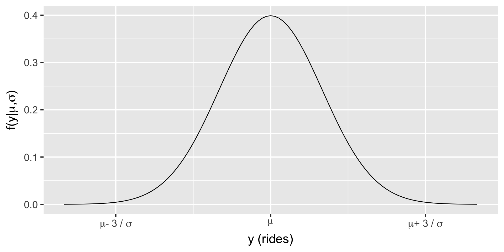
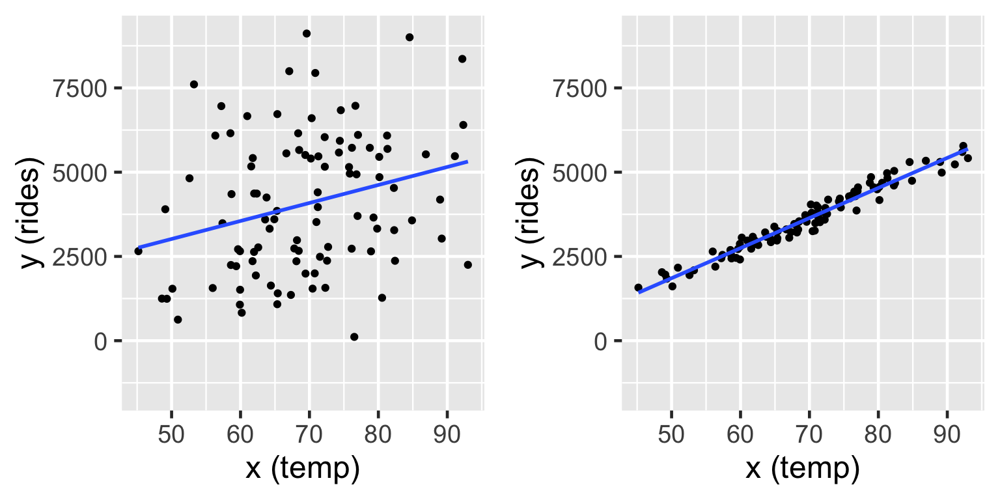
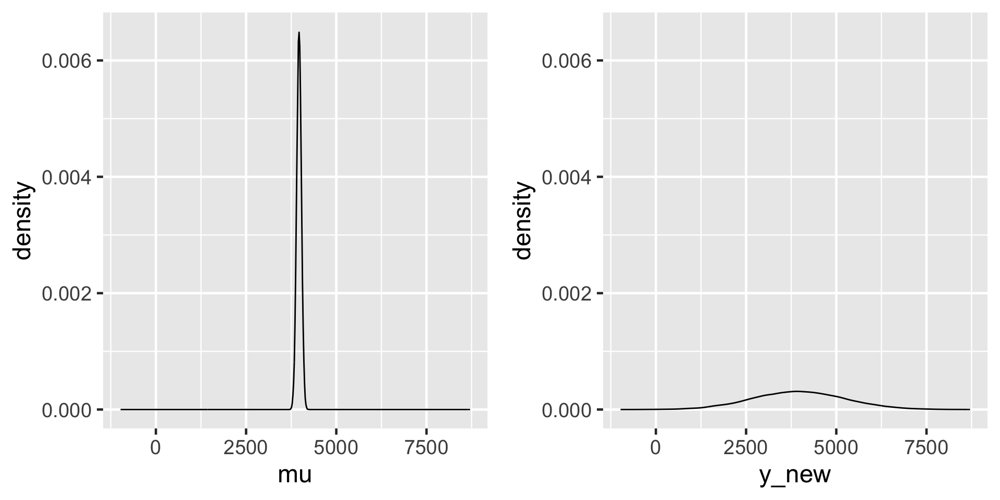
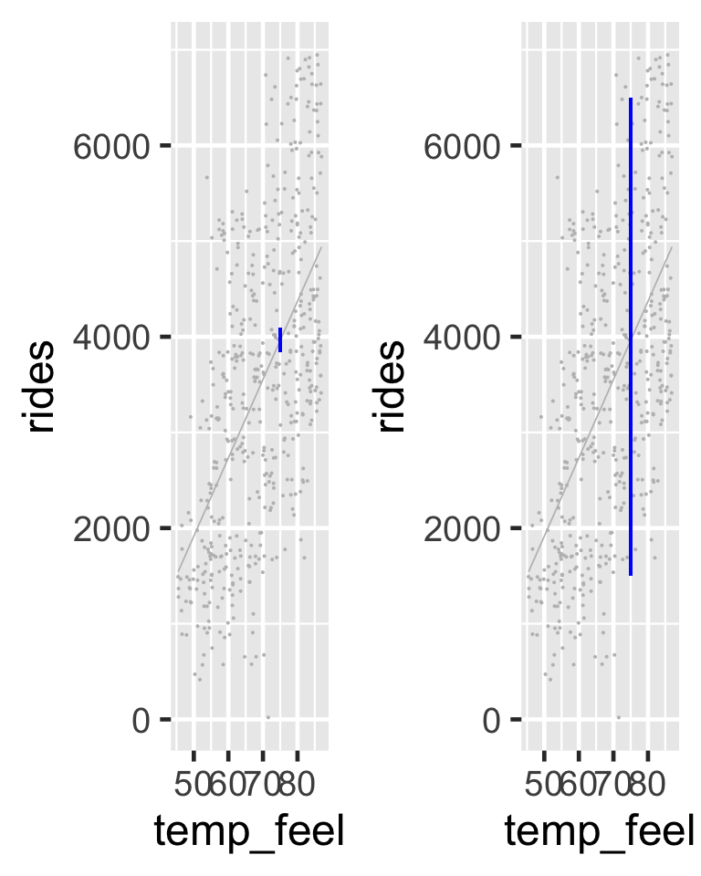

Fitting regression models
Day 4
Note that examples in this lecture are a simplified version of Chapter 9 of Bayes Rules! book.
Packages
Data
Rows: 500
Columns: 13
$ date <date> 2011-01-01, 2011-01-03, 2011-01-04, 2011-01-05, 2011-01-0…
$ season <fct> winter, winter, winter, winter, winter, winter, winter, wi…
$ year <int> 2011, 2011, 2011, 2011, 2011, 2011, 2011, 2011, 2011, 2011…
$ month <fct> Jan, Jan, Jan, Jan, Jan, Jan, Jan, Jan, Jan, Jan, Jan, Jan…
$ day_of_week <fct> Sat, Mon, Tue, Wed, Fri, Sat, Mon, Tue, Wed, Thu, Fri, Sat…
$ weekend <lgl> TRUE, FALSE, FALSE, FALSE, FALSE, TRUE, FALSE, FALSE, FALS…
$ holiday <fct> no, no, no, no, no, no, no, no, no, no, no, no, no, yes, n…
$ temp_actual <dbl> 57.39952, 46.49166, 46.76000, 48.74943, 46.50332, 44.17700…
$ temp_feel <dbl> 64.72625, 49.04645, 51.09098, 52.63430, 50.79551, 46.60286…
$ humidity <dbl> 80.5833, 43.7273, 59.0435, 43.6957, 49.8696, 53.5833, 48.2…
$ windspeed <dbl> 10.749882, 16.636703, 10.739832, 12.522300, 11.304642, 17.…
$ weather_cat <fct> categ2, categ1, categ1, categ1, categ2, categ2, categ1, ca…
$ rides <int> 654, 1229, 1454, 1518, 1362, 891, 1280, 1220, 1137, 1368, …Rides

\(Y_i | \mu_i, \sigma \stackrel{ind}{\sim} N(\mu_i, \sigma^2)\)
\(\mu_i \sim N(\theta, \tau^2)\) \(\sigma \sim \text{ some prior model.}\)
Regression Model
\(Y_i\) the number of rides
\(X_i\) temperature (in Fahrenheit) on day \(i\).
\(\mu_i = \beta_0 + \beta_1X_i\)
\(\beta_0:\) the typical ridership on days in which the temperature was 0 degrees ( \(X_i\)=0). It is not interpretable in this case.
\(\beta_1:\) the typical change in ridership for every one unit increase in temperature.
Normal likelihood model
\[\begin{split} Y_i | \beta_0, \beta_1, \sigma & \stackrel{ind}{\sim} N\left(\mu_i, \sigma^2\right) \;\; \text{ with } \;\; \mu_i = \beta_0 + \beta_1X_i \; .\\ \end{split}\] From previous slide
Both the model lines show cases where \(\beta_0 = -2000\) and slope \(\beta_1 = 100\). On the left \(\sigma = 2000\) and on the right \(\sigma = 200\) (right). In both cases, the model line is defined by \(\beta_0 + \beta_1 x = -2000 + 100 x\).
Model
\(\text{likelihood:} \; \; \; Y_i | \beta_0, \beta_1, \sigma \;\;\;\stackrel{ind}{\sim} N\left(\mu_i, \sigma^2\right)\text{ with } \mu_i = \beta_0 + \beta_1X_i\)
\(\text{prior models:}\)
\(\beta_0\sim N(m_0, s_0^2 )\)
\(\beta_1\sim N(m_1, s_1^2 )\)
\(\sigma \sim \text{Exp}(l)\)
Note:
\(\text{Exp}(l) = \text{Gamma}(1, l)\)
Model building: One step at a time
Let \(Y\) be a response variable and \(X\) be a predictor or set of predictors. Then we can build a model of \(Y\) by \(X\) through the following general principles:
- Take note of whether \(Y\) is discrete or continuous. Accordingly, identify an appropriate model structure of data \(Y\) (e.g., Normal, Poisson, Binomial).
- Rewrite the mean of \(Y\) as a function of predictors \(X\) (e.g., \(\mu = \beta_0 + \beta_1 X\)).
- Identify all unknown model parameters in your model (e.g., \(\beta_0, \beta_1, \sigma\)).
- Take note of the values that each of these parameters might take. Accordingly, identify appropriate prior models for these parameters.
Suppose we have the following prior understanding of this relationship:
On an average temperature day, say 65 or 70 degrees for D.C., there are typically around 5000 riders, though this average could be somewhere between 3000 and 7000.
For every one degree increase in temperature, ridership typically increases by 100 rides, though this average increase could be as low as 20 or as high as 180.
At any given temperature, daily ridership will tend to vary with a moderate standard deviation of 1250 rides.
\[\begin{split} Y_i | \beta_0, \beta_1, \sigma & \stackrel{ind}{\sim} N\left(\mu_i, \sigma^2\right) \;\; \text{ with } \;\; \mu_i = \beta_0 + \beta_1X_i \\ \beta_{0c} & \sim N\left(5000, 1000^2 \right) \\ \beta_1 & \sim N\left(100, 40^2 \right) \\ \sigma & \sim \text{Exp}(0.0008) .\\ \end{split}\]
Simulation via rstanarm
The refresh = FALSE prevents printing out your chains and iterations, especially useful in Quarto.
(Intercept) temp_feel sigma
1.00640 0.99675 1.01665 (Intercept) temp_feel sigma
0.9999605 0.9999456 1.0000145 The effective sample size ratios are slightly above 1 and the R-hat values are very close to 1, indicating that the chains are stable, mixing quickly, and behaving much like an independent sample.
Simulation via rstan
Simulation via rstan
Posterior summary statistics
# A tibble: 4 × 5
term estimate std.error conf.low conf.high
<chr> <dbl> <dbl> <dbl> <dbl>
1 (Intercept) -2196. 356. -2643. -1738.
2 temp_feel 82.2 5.10 75.7 88.5
3 sigma 1282. 40.9 1231. 1336.
4 mean_PPD 3487. 81.2 3382. 3591. The posterior median relationship is
\[\begin{equation} -2195.73 + 82.19 X. \end{equation}\]

Do we have ample posterior evidence that there’s a positive association between ridership and temperature, i.e., that \(\beta_1 > 0\)?
Visual evidence In our visual examination of 50 posterior plausible scenarios for the relationship between ridership and temperature, all exhibited positive associations.
Numerical evidence from the posterior credible interval More rigorously, the 80% credible interval for \(\beta_1\) in tidy() summary, (75.7, 88.5), lies entirely and well above 0.
Numerical evidence from a posterior probability A quick tabulation approximates that there’s almost certainly a positive association, \(P(\beta_1 > 0 \; | \; \vec{y}) \approx 1\).
Posterior prediction
Suppose a weather report indicates that tomorrow will be a 75-degree day in D.C. What’s your posterior guess of the number of riders that Capital Bikeshare should anticipate?
Do you think there will be 3969 riders tomorrow?
\[-2195.73 + 82.19*75 = 3968.52 .\]
There are two potential sources of variability:
Sampling variability in the data
The observed ridership outcomes, \(Y\), typically deviate from the model line. That is, we don’t expect every 75-degree day to have the same exact number of rides.Posterior variability in parameters \((\beta_0, \beta_1, \sigma)\)
The posterior median model is merely the center in a range of plausible model lines \(\beta_0 + \beta_1 X\). We should consider this entire range as well as that in \(\sigma\), the degree to which observations might deviate from the model lines.
Posterior Predictive Model
Mathematically speaking:
\[f\left(y_{\text{new}} | \vec{y}\right) = \int\int\int f\left(y_{new} | \beta_0,\beta_1,\sigma\right) f(\beta_0,\beta_1,\sigma|\vec{y}) d\beta_0 d\beta_1 d\sigma .\]
Now, we don’t actually have a nice, tidy formula for the posterior pdf of our regression parameters, \(f(\beta_0,\beta_1,\sigma|\vec{y})\), and thus can’t get a nice tidy formula for the posterior predictive pdf \(f\left(y_{\text{new}} | \vec{y}\right)\). What we do have is 20,000 sets of parameters in the Markov chain \(\left(\beta_0^{(i)},\beta_1^{(i)},\sigma^{(i)}\right)\). We can then approximate the posterior predictive model for \(Y_{\text{new}}\) at \(X = 75\) by simulating a ridership prediction from the Normal model evaluated each parameter set:
\[Y_{\text{new}}^{(i)} | \beta_0, \beta_1, \sigma \; \sim \; N\left(\mu^{(i)}, \left(\sigma^{(i)}\right)^2\right) \;\; \text{ with } \;\; \mu^{(i)} = \beta_0^{(i)} + \beta_1^{(i)} \cdot 75.\]
Thus, each of the 20,000 parameter sets in our Markov chain (left) produces a unique prediction (right):
\[\left[ \begin{array}{lll} \beta_0^{(1)} & \beta_1^{(1)} & \sigma^{(1)} \\ \beta_0^{(2)} & \beta_1^{(2)} & \sigma^{(2)} \\ \vdots & \vdots & \vdots \\ \beta_0^{(20000)} & \beta_1^{(20000)} & \sigma^{(20000)} \\ \end{array} \right] \;\; \longrightarrow \;\; \left[ \begin{array}{l} Y_{\text{new}}^{(1)} \\ Y_{\text{new}}^{(2)} \\ \vdots \\ Y_{\text{new}}^{(20000)} \\ \end{array} \right]\]
The resulting collection of 20,000 predictions, \(\left\lbrace Y_{\text{new}}^{(1)}, Y_{\text{new}}^{(2)}, \ldots, Y_{\text{new}}^{(20000)} \right\rbrace\), approximates the posterior predictive model of ridership \(Y\) on 75-degree days. We will obtain this approximation both “by hand,” which helps us build some powerful intuition, and using shortcut R functions.
Building a posterior predictive model
We’ll simulate 20,000 predictions of ridership on a 75-degree day, \(\left\lbrace Y_{\text{new}}^{(1)}, Y_{\text{new}}^{(2)}, \ldots, Y_{\text{new}}^{(20000)} \right\rbrace\), one from each parameter set in bike_model_df. Let’s start small with just the first posterior plausible parameter set:
(Intercept) temp_feel sigma
1 -2316.07 84.16782 1244.855Under this particular scenario, \(\left(\beta_0^{(1)}, \beta_1^{(1)}, \sigma^{(1)}\right) = (-2316, 84.17, 1245)\), the average ridership at a given temperature is defined by
\[\mu = \beta_0^{(1)} + \beta_1^{(1)} X = -2316 + 84.17X .\]
As such, we’d expect an average of \(\mu = 3997\) riders on a 75-degree day:
To capture the sampling variability around this average, i.e., the fact that not all 75-degree days have the same ridership, we can simulate our first official prediction \(Y_{\text{new}}^{(1)}\) by taking a random draw from the Normal model specified by this first parameter set:
\[Y_{\text{new}}^{(1)} | \beta_0, \beta_1, \sigma \; \sim \; N\left(3996.75, 1245^2\right) .\]
Now let’s do this 19,999 more times.
(Intercept) temp_feel sigma mu y_new
1 -2316.070 84.16782 1244.855 3996.517 4827.125
2 -2488.597 87.07960 1306.051 4042.373 3880.632
3 -2490.871 86.29303 1295.093 3981.106 4992.403Whereas the collection of 20,000 mu values approximates the posterior model for the typical ridership on 75-degree days, \(\mu = \beta_0 + \beta_1 * 75\), the 20,000 y_new values approximate the posterior predictive model of ridership for tomorrow, an individual 75-degree day,
\[Y_{\text{new}} | \beta_0, \beta_1, \sigma \; \sim \; N\left(\mu, \sigma^2\right) \;\; \text{ with } \;\; \mu = \beta_0 + \beta_1 \cdot 75 .\]
The 95% credible interval for the typical number of rides on a 75-degree day, \(\mu\), ranges from 3842 to 4094. In contrast, the 95% posterior prediction interval for the number of rides tomorrow has a much wider range from 1509 to 6496.
The posterior model of \(\mu\), the typical ridership on a 75-degree day (left), and the posterior predictive model of the ridership tomorrow, a specific 75-degree day (right).
There’s more accuracy in anticipating the average behavior across multiple data points than the unique behavior of a single data point.

Posterior prediction with rstanarm
Simulating the posterior predictive model from scratch allowed you to really connect with the concept, but moving forward we can utilize the posterior_predict() function in the rstanarm package:
The shortcut_prediction object contains 20,000 predictions of ridership on 75-degree days. We can both visualize and summarize the corresponding (approximate) posterior predictive model using our usual tricks. The results are equivalent to those we constructed from scratch above:
2.5% 97.5%
1 1508.509 6496.453# Plot the approximate predictive model
mcmc_dens(shortcut_prediction) +
xlab("predicted ridership on a 75 degree day")